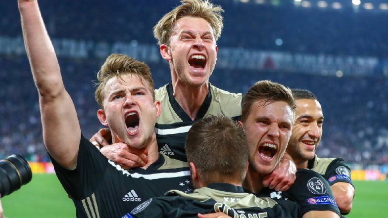

Ronaldo and Co. Crash Out
After winning the previous 3 champions league title with former club Real Madrid, the unstoppable Ronaldo is finally stopped. But what does mean for the Juventus talisman? Will he want a move to another club or stay at Juventus until he brings home a CL trophy?... Click to read more

The Brilliance of Messi and Barcelona
Barcelona move onto the semi-final after failing to do so the past 3 years after a win over Ole Gunnar Solskjaer side. Man Utd failed to score over both legs of the quarter-final, and were completely dominated by this Barca side. As Barcelona get ready for their semi-final match against an offensiive-oriented Liverpool, I think it's time to bring the comparison of this Barcelona side to Guardiola's Barcelona that swept all the trophies in 2011-2012... Click to read more

Can this Ajax team go all the way?
What at first seemed like a dream is starting to become reality for the young dutch team. This team, objectively, has been the most vibrant, entertaining side in Europe. The young core gives them a swagger that the rest of the teams left in the compeititon can't compete with. Only one obstacle remains in their to the road to the final: Tottenham Hotspur. In this blogpost, I answer the question whether or not they can win the prestigious trophy... Click to read more